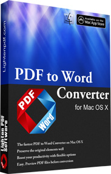
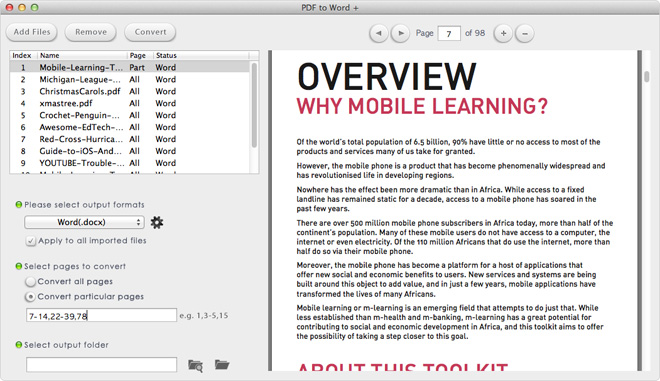

<div id="box">
<div class="t1">
  <div class="t">
    <div class="b">
      <div class="m">
        <div id="containerpop">
          <div align="right" id="closeBox"></div>
          <div class="app">
            <div class="icon"></div>
            <div class="desc2">
              <h1>Lighten Software – PDF to Word Converter for Mac</h1>
              <h2>Convert PDF files to Word Documents in Seconds</h2>
              <p>Lighten Software’s <strong>PDF to Word Converter for Mac</strong> is the powerful and intuitive app that lets you convert PDF to Microsoft Word documents in just seconds. With a clean and clear interface, you preview PDFs directly inside the built-in PDF reader. It’s incredibly easy to use and the most efficient way to convert PDFs – add as many as you like at one time or even convert individual pages!  With superior accuracy and layout and format retention, all your PDF elements including text, tables, graphics and columns will be perfectly recreated in an editable Word document.</p>
              <div class="price_sysr">
                <div class="l">
                  <div class="ItemPrice">$39.99
                    <div class="ITline"></div>
                  </div>
                  <div class="fullcontent ItemFull">Full Version</div>
                </div>
                <div class="r">
                  <div class="systemreq1">
                    <div class="systemreq">
                      <h1>System requirements:</h1>
                      <ul>
                        <li>Mac OS X 10.6 or later including Mac OS X 10.8 Mountain Lion</li>
                        <li>512MB of RAM</li>
                      </ul>
                      <h1>Product details:</h1>
                      <ul>
                        <li>By Lighten Software</li>
                        <li>Version 2.2</li>
                        <li>Size: 6MB</li>
                      </ul>
                    </div>
                  </div>
                </div>
              </div>
            </div>
          </div>
          <div class="tabs_content"></div>
        </div>
      </div>
    </div>
  </div>
</div>
</div>
